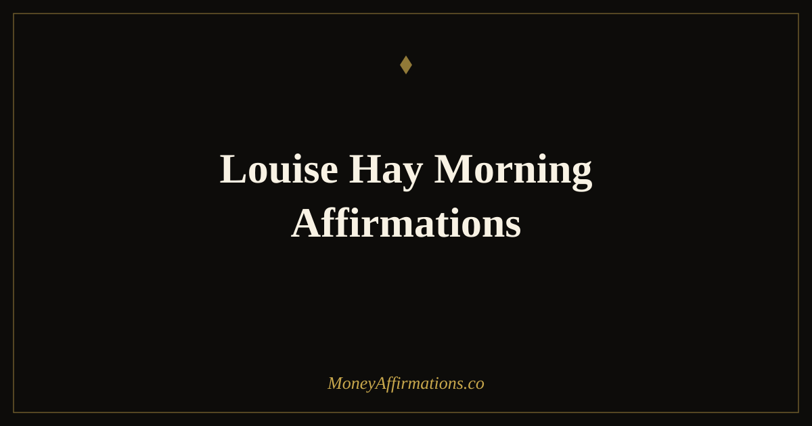

Louise Hay Morning Affirmations: 25 Statements for Abundant Days

Louise Hay built an entire philosophy on a single premise: that the way you treat yourself in your own mind determines what you allow into your outer life, including your financial life. She taught that money problems are almost never about money. They are about self-worth — about a deep, often unexamined belief that you are not quite deserving of the good things life offers. Change that belief at the root, she argued, and the outer circumstances begin to shift.
These 25 morning affirmations are inspired by that tradition. They are designed for the start of the day, when the mind is open and unhurried, and they work from the inside out — beginning with self-acceptance and moving outward into abundance, prosperity, and genuine financial ease. If you have tried money affirmations before and found them hollow, these may work differently because they address the layer underneath the numbers.
What are Louise Hay morning affirmations?
Louise Hay morning affirmations draw on Hay's core teaching that the present moment is always the point of power. Her approach placed particular emphasis on beginning the day with statements that affirm your fundamental worthiness — not what you have achieved, but what you inherently deserve simply by existing. For money and abundance specifically, this means starting not with "I earn well" but with "I deserve to live well," because the latter is the belief that makes the former possible.
These affirmations are distinct from purely practical money affirmations in that they centre self-concept and emotional safety. Hay understood that many people carry a financial ceiling — an unconscious upper limit on what they allow themselves to earn, keep, or enjoy — that is set not by ability but by worthiness. Her morning practice was designed to gently raise that ceiling through daily, compassionate repetition. For a broader collection in this tradition, see the Louise Hay abundance affirmations collection.
25 Louise Hay morning affirmations
- I love and approve of myself, and I deserve a life of genuine abundance.
- The universe is generous, and I am open to receiving its generosity today.
- I am safe with money and I welcome more of it into my life with gratitude.
- My self-worth is not measured by my net worth, and both are growing together.
- I release every belief that says I do not deserve to live well and be paid well.
- Life supports me in every way, including financially, and I trust that fully.
- I am grateful for this morning and the abundance it already contains.
- My heart is open, my mind is clear, and prosperity flows to me naturally.
- I am worthy of financial ease, and I allow myself to experience it without guilt.
- Today I treat myself with the kindness and confidence of someone who expects good things.
- I forgive any past mistakes with money and open to a fresh financial beginning today.
- The more I love and accept myself, the more abundance I attract into my life.
- I trust that there is always enough — enough money, enough time, enough support.
- I greet this morning knowing I am enough, I have enough, and more is on its way.
- My income grows as my self-worth grows, and I nurture both with care.
- I am at peace with my financial past and excited about my financial future.
- Prosperity is my natural state and I return to it with ease every morning.
- I choose thoughts today that support my financial wellbeing and inner peace.
- I am surrounded by abundance — in love, in health, in opportunity, and in money.
- Every morning I reaffirm my right to be happy, healthy, and financially secure.
- I release comparison and return to the truth that my path to wealth is my own.
- I am a loving steward of money, and more flows to me because I use it well.
- The world wants me to thrive and I say yes to that invitation each morning.
- I wake up to a life that is already rich in the ways that matter most.
- I begin this day knowing that I am loved, supported, and deserving of all good things.
How to use these affirmations
Louise Hay recommended what she called a "mirror work" practice — saying affirmations while looking directly into your own eyes in a mirror, particularly in the morning. This technique creates a level of self-directed compassion that recitation alone does not. It is worth trying even if it feels uncomfortable at first; in fact, the discomfort usually signals exactly where the resistance is. Start with a single statement — "I love and approve of myself" — and hold your own gaze for a full thirty seconds. The feelings that arise are informative, not obstacles.
If mirror work feels like too much to begin with, simply sit quietly with your eyes closed and say five of these statements in a slow, deliberate voice. The morning window, before external demands land, is when the mind is most open to new belief. Pair this practice with one small act of financial self-care during the day — whether that is moving money to savings, reviewing your budget calmly, or simply declining a purchase you would later regret. The inner practice and the outer action reinforce each other in both directions.
Self-worth as the root of financial life: Louise Hay's lasting contribution
Louise Hay was not a financial advisor, but she understood something that financial advisors often miss: that people behave in alignment with what they believe they deserve. Her work, rooted in the self-help and New Thought traditions and later influenced by early psychological insights into belief formation, placed self-concept at the centre of every outer circumstance. This is not mysticism — it is observable in financial behaviour every day. People underprice their services, avoid asking for raises, accumulate debt quietly, and deflect compliments about their success because part of them does not believe the success is real or deserved.
Modern psychology has validated much of this through the construct of financial self-efficacy — the belief in your own ability to manage, earn, and grow money. Research consistently shows that self-efficacy predicts financial behaviour more reliably than knowledge alone. You can know exactly what you should do with money and still not do it, if part of you believes you are not the sort of person who succeeds financially. Hay's morning affirmations address that belief directly — not with logic, but with repetition, warmth, and the slow building of a self-concept that says: I am someone who lives well, earns well, and receives abundance as a matter of course.
Tips to make them work faster
- Try mirror work for one week. Even sixty seconds of eye contact with yourself while saying a single affirmation creates a deeper shift than five minutes of reading alone.
- Start with the statement that creates the most resistance. Hay's method deliberately targets the beliefs that feel least true first, because those are the ones doing the most harm.
- Pair self-worth with a small financial act of self-care daily. Whether it is saving five pounds or declining a regrettable purchase, let your action confirm the affirmation.
- Use a gentle tone, not a forceful one. Hay's approach was compassionate, not aggressive. Say these affirmations the way you would speak to someone you genuinely love.
- Practise forgiveness statements when resistance is strong. If "I deserve abundance" feels implausible, begin with "I am willing to release the belief that I do not deserve abundance." Willingness is a valid and effective starting point.
Frequently Asked Questions
What was Louise Hay's approach to money affirmations?
Louise Hay taught that financial problems are rarely about money — they are about self-worth. Her approach centred on healing the belief that you are not lovable or deserving, because she understood that people unconsciously create financial ceilings that match their sense of what they deserve. Her affirmations for prosperity almost always began with self-acceptance, which she considered the foundation of every outer change, including financial ones.
Can I combine Louise Hay's approach with practical financial tools?
Absolutely — and Hay herself encouraged this. She was clear that affirmations prepare the inner ground for outer action, not replace it. Budgeting, saving, investing, and earning are outer actions. What her work addresses is the inner resistance — the guilt, fear, and unworthiness — that prevents people from using those tools effectively. The two approaches work in different layers and complement each other well.
Why does Louise Hay's method focus so much on self-love for financial growth?
Because self-worth directly shapes financial behaviour. People with low self-worth often underprice their services, avoid negotiating, feel guilty about receiving money, and unconsciously sabotage financial gains that feel undeserved. By building genuine inner worthiness first, Hay's method removes the psychological ceiling that limits what people allow themselves to earn, keep, and enjoy — and that ceiling is almost always more limiting than any practical barrier.
For a broader foundation of abundance-focused statements in this tradition, explore the full abundance affirmations collection and find the statements that speak most directly to where you are in your financial journey right now.